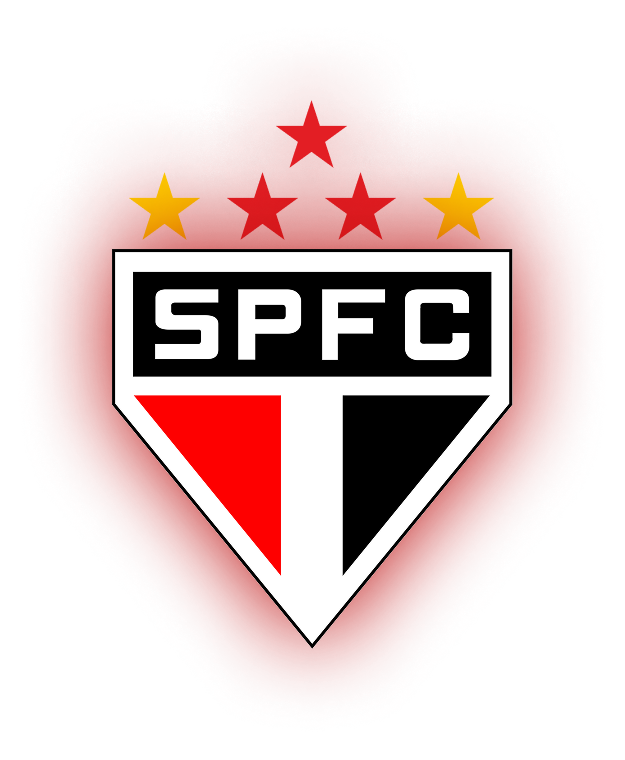
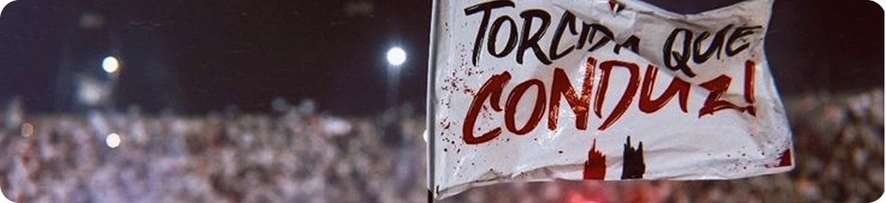

História do clube
O São Paulo Futebol Clube foi fundado oficialmente em 25 de janeiro de 1930, por integrantes dissidentes do Clube Athlético Paulistano e da Associação Atlética das Palmeiras — duas agremiações tradicionais que, por diferentes razões, decidiram unir forças para criar um novo clube que representasse a força e a paixão do futebol paulista. Desde sua fundação, o São Paulo nasceu com espírito competitivo, herdeiro do prestígio esportivo de seus fundadores. Apesar disso, enfrentou sérias dificuldades financeiras nos primeiros anos e, em 1935, passou por um período de inatividade. A pausa, no entanto, durou pouco: em dezembro do mesmo ano, o clube foi refundado, mantendo seu nome, cores e símbolos — reafirmando seu compromisso com a excelência esportiva. A refundação marcou o início de uma nova era, e desde então, o São Paulo Futebol Clube trilhou um caminho de glórias. Nas décadas seguintes, o clube se consolidaria como uma das maiores potências do futebol brasileiro, sempre com uma administração focada em resultados e inovação.
Identidade Visual
O escudo do São Paulo Futebol Clube carrega uma identidade rica e simbólica. Ele apresenta as iniciais “SPFC” sobre um fundo triangular com as cores branca, vermelha e preta - uma homenagem à fusão cultural que caracteriza a cidade de São Paulo. As duas estrelas douradas representam os recordes mundiais do atleta Adhemar Ferreira da Silva, bicampeão olímpico no salto triplo, formado pelo clube. Já as três estrelas vermelhas simbolizam os títulos mundiais conquistados em 1992, 1993 e 2005. Mais do que um logotipo, o escudo representa a alma do São Paulo: uma instituição que honra seu passado, respeita seu presente e olha para o futuro com grandeza.
Títulos e Conquistas
1931
1943
1945
1946
1948
1949
1953
1957
1970
1971
1975
1980
1981
1985
1987
1989
1991
1992
1998
2000
2002
2005
1977
1986
1991
2006
2007
2008
2023
2012
1992
1993
2005
1992
1993
2005
Filtro
Torcida e Cultura Tricolor
O São Paulo conta com uma das maiores torcidas do Brasil. Estima-se que entre 15 e 18 milhões de torcedores, espalhados por todas as regiões do país e também no exterior, acompanham e vibram com o clube. A torcida tricolor é conhecida por seu amor incondicional, presença nos estádios e forte atuação nas redes sociais, fazendo do clube uma das maiores marcas esportivas do continente. A cultura torcedora do São Paulo é rica em rituais, cânticos, bandeiras e mobilizações. Mesmo em momentos difíceis, a torcida mantém sua identidade, sendo peça fundamental na construção da história do clube. Além disso, a presença digital do São Paulo é marcante, com conteúdo criativo, cobertura completa dos jogos e uma interação constante com os torcedores por meio de plataformas digitais. O clube entende que o futebol vai além das quatro linhas e se entrelaça com a cultura brasileira, gerando memória, identidade e pertencimento.
Ídolos e Talentos
Rogério
Goleiro
Rogério
Goleiro
Rogério
Goleiro
Rogério
Goleiro
Rogério
Goleiro
Rogério
Goleiro